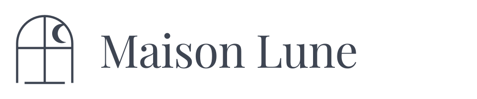
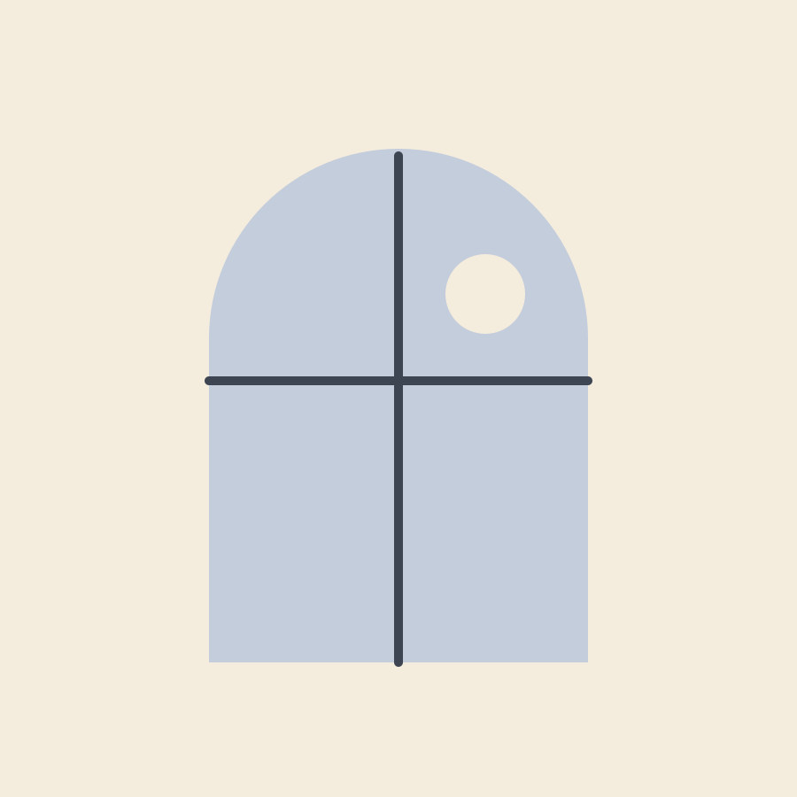
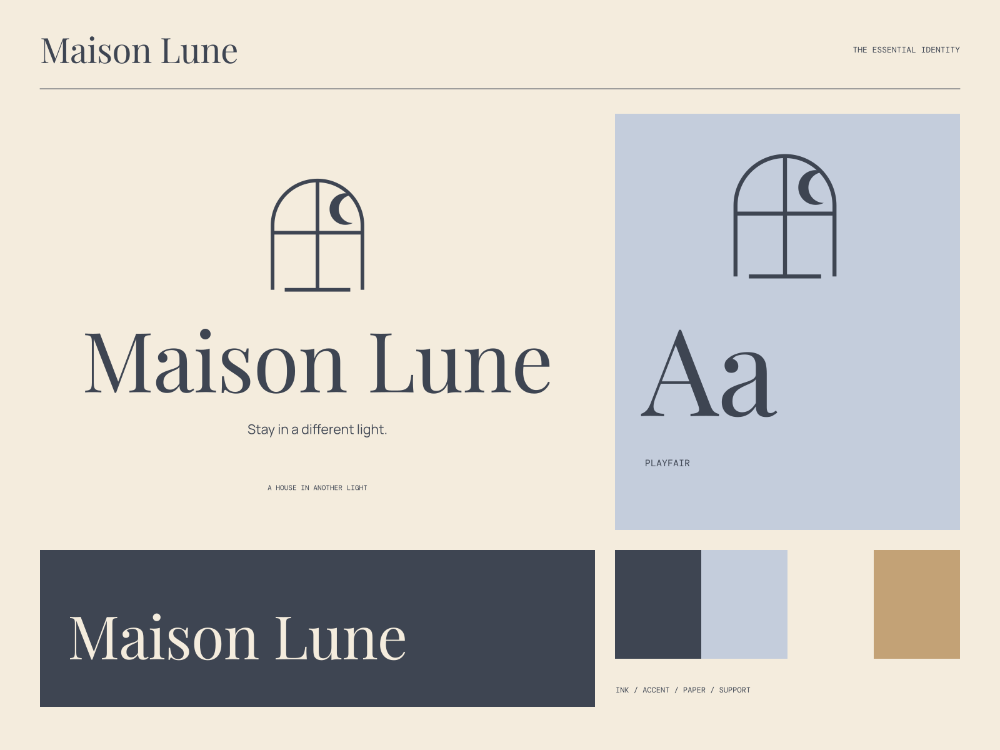

01
Rooms with a point of view
Considered spaces that make room for a different rhythm.

MAISON LUNE / ROOMS & TABLE
Stay in a different light. A stay, made a little more personal.

A coherent little world
A stay, made a little more personal. Stay in a different light.
01
Considered spaces that make room for a different rhythm.
02
Seasonal pleasures and the good feeling of being well hosted.
03
Thoughtful details that feel collected rather than imposed.

The point of view
Moonlit window studies, intimate table objects, soft blue stationery, and beautifully balanced book-like typography. A house feels personal rather than perfectly polished.